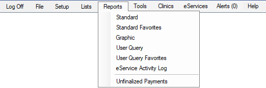

Reports
Open Dental has many report options accessed from the Main Menu that allow offices to view their data in organized formats.
- Standard: Standard, text based reports (production and income, daily and monthly reports, lists, and public health options). See Standard Reports.
- Standard Favorites: Displays reports marked as Sub Menu in Report Setup: Display Settings.

- Graphic: Visual graphic reports by provider or clinic and customizable to fit office requirements (production and income, accounts receivable, new patients, and broken appointments). See Graphic Reports.
- User Query: Generate custom reports in any format and export any data a user wants. See User Query.
- User Query Favorites: Displays user queries marked as released in Query Favorites.

- eService Activity Log: Opens the eService Activity Log.
- Unfinalized Payments: Shows the number of outstanding unfinalized payments in parentheses e.g., (3). Click to open the Unfinalized Insurance Payment Report. For the number of unfinalized payments to show, the Open Dental Service must be installed and running.
Other Reports in Open Dental:
- To add a click-able URL as a Reports menu option, see Custom Bridges.
- Appointment Lists
- Accounting reports (General Ledger Detail and Balance Sheets). See Accounting Close Year.
- Clearinghouse reports. See Send Claims.
- Arizona Reports
- Custom Reports: Some users may have a Custom Reports menu item. It means there is a reports folder in the A to Z Folders (typically Reports) that contains at least one .rdl file (e.g., Unsched Treat Plans.rdl). For each .rdl file in the folder, there will be one menu item.
Note: If an office converted from another software, users should not run reports with dates prior to or on the conversion day.